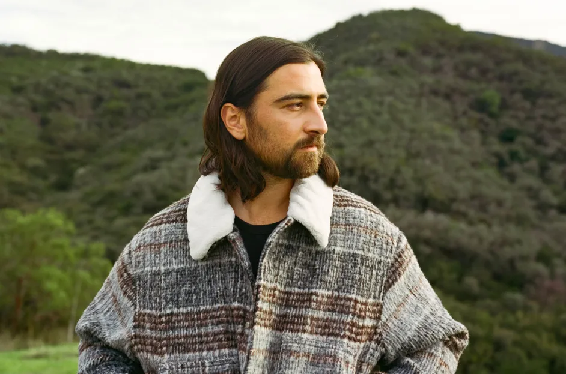

Noah Kahan (/ˈkɑːn/ KAHN; born January 1, 1997)[2] is an American singer-songwriter who signed with Republic Records in 2017. His breakthrough single, "Hurt Somebody", achieved gold status in the United States and charted in multiple international markets. The single and EP of the same name preceded the release of his debut album, Busyhead (2019). Within five years, two more albums followed: I Was / I Am (2021) and Stick Season (2022), the second of which went on to be his mainstream commercial breakthrough and led to his nomination in 2023 for the Grammy Award for Best New Artist.
Early life and educationKahan was born in Strafford, Vermont, where he was raised on a 133-acre tree farm.[3][4] His Jewish father taught him to play guitar, while his Christian mother, who wrote parenting guides for a living, taught him writing.[4][5] Kahan has stated that his Jewish roots play a large part in his identity.[6] He was the third of four children.[7] Kahan began writing songs at age eight and uploaded them to SoundCloud and YouTube, where his music began to gain exposure. He received his first guitar at age 10.[8] He attended Hanover High School in Hanover, New Hampshire.[7][9] He was accepted to Tulane University, but decided against attending to instead focus on his musical career.[7]
Kahan first went on tour at 19 years old, opening for Milky Chance.[7] In 2017, Kahan signed with Republic Records. He moved to New York City to work, and also spent time in Los Angeles and Nashville.[4][10] Kahan cites some of his inspirations as Paul Simon, Yusuf Islam (Cat Stevens), Counting Crows, Hozier, Sam Fender, and Mumford & Sons.[11][12] In 2018, Kahan was featured on the song "Tough" by Quinn XCII. The song was released on December 11, 2018. In 2019, he released his debut album, Busyhead.[4] The album featured the single "Hurt Somebody" featuring Julia Michaels which peaked at number 24 on the Billboard Hot Rock chart, marking his first appearance on any US charts. Kahan returned to Vermont at the onset of the COVID-19 pandemic. There, he wrote his EP Cape Elizabeth over the course of a week, releasing it in May 2020.[4] In late 2020, he returned to Los Angeles, where he worked on recording his second album, I Was / I Am .[4] The album was released on September 17, 2021. The album did not garner Kahan any mainstream hits.
In October 2020, Kahan began posting viral TikTok videos showcasing the first verse of what would become the hit single "Stick Season". Over the next two years, Kahan uploaded more snippets of the song and teased other songs from his forthcoming third studio album, leading Stick Season to become viral before it was even released.[4] On July 8, 2022, Kahan finally released the full version of the song to the public. Kahan says "Stick Season" is the kind of song he wanted to write, moving away from his pop heavy projects in the past to a folk centric project. Kahan also released the single "Northern Attitude" prior to the album's release.[13] On October 14, 2022, Kahan released his third studio album, the 14-track Stick Season, which was produced by Gabe Simon.[14] The album debuted at number 14 on the Billboard 200, Kahan's first appearance on the chart,[15] launching Kahan into mainstream success and helping make him a recognizable figure within the music world. On June 9, 2023, Kahan released a deluxe version of the album titled Stick Season (We'll All Be Here Forever) which featured seven additional tracks including an extended version of the single "The View Between Villages".[16] After the release of Stick Season (We'll All Be Here Forever), Kahan released tracks on the album with added collaborations from other artists, starting with "Dial Drunk" with Post Malone. Additional collaborations include "Call Your Mom", with Lizzy McAlpine; "She Calls Me Back", with Kacey Musgraves; "Northern Attitude", with Hozier; "Everywhere, Everything", with Gracie Abrams; and "Homesick", with Sam Fender.[17][18][19][20][21][22] Kahan also collaborated with American country star Zach Bryan on the single "Sarah's Place" from Bryan's Boys of Faith EP. The single peaked at number 14 on the Billboard Hot 100. Kahan was nominated for Best New Artist at the 66th Annual Grammys Awards, marking Kahan's first Grammy nomination.[23] In 2023, Kahan was included as one of Time magazine's TIME100 Next.[24] On January 5, 2024, "Stick Season" became number 1 on the UK Singles Chart marking the first number 1 of the year and Kahan's first chart topper of his career.[25] In February the single also hit number 1 on the Australian ARIA charts.[26] In February 2024, "Stick Season" hit a new peak on the Billboard Hot 100 at 10, the highest position of Kahan's career.[27] In late January, Kahan revealed a final version of the Stick Season album, Stick Season (Forever). Also produced by Simon, the new rendition of the album contains all the collaboration projects since the release of Stick Season (We'll All Be Here Forever), including a new track titled "Forever" and two new collaborations on "You're Gonna Go Far" with Brandi Carlile and "Paul Revere" with Gregory Alan Isakov.[28] The album also included a new version of "Northern Attitude" in collaboration with singer Hozier. The expanded album was released on February 9, 2024.[29] In the same year, Kahan announced a live album, Live From Fenway, which was released on August 30.
Kahan moved with his fiancée to Watertown, Massachusetts in July 2022.[4] He has experienced anxiety and depression throughout his life, and began attending therapy as a child.[4][7] He has a German Shepherd named Penny who often goes on tour with him.
Busyhead (2019) I Was / I Am (2021) Stick Season (2022)
This article was initially published on Wikipedia.com